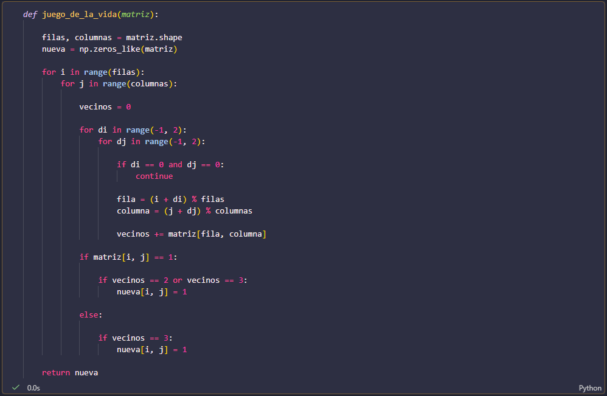
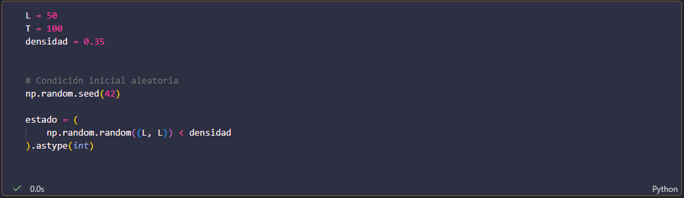
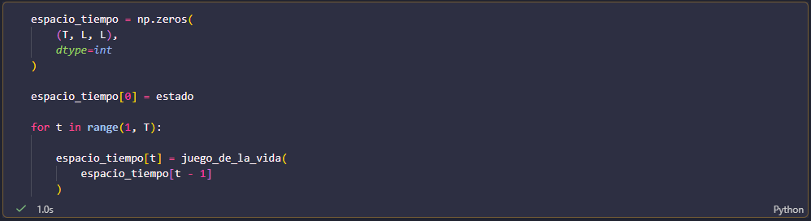
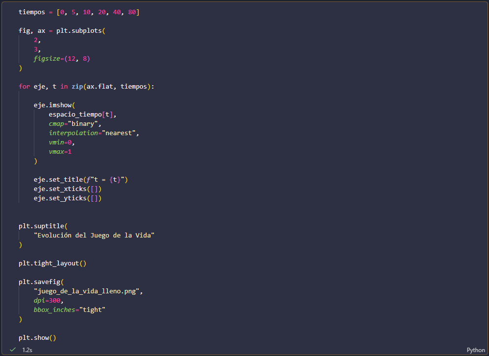
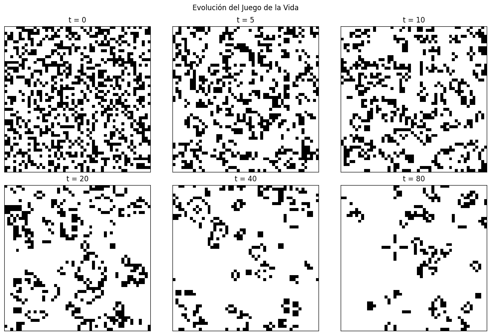

Como extensión de los autómatas celulares unidimensionales, se implementó el Juego de la Vida de Conway, un autómata celular bidimensional en el que cada célula puede encontrarse en uno de dos estados: viva o muerta. El estado completo del sistema se representa mediante una matriz binaria, donde el valor \(1\) representa una célula viva y el valor \(0\) una célula muerta.
En este caso se utilizó una cuadrícula de tamaño \(50\times50\). Por lo tanto, una configuración del sistema pertenece al espacio \(\{0,1\}^{50\times50}\). A diferencia del autómata unidimensional estudiado anteriormente, donde cada célula tenía una vecindad de dos elementos, en el Juego de la Vida cada célula interactúa con las ocho células que la rodean. Para cada célula se cuentan sus vecinos vivos y, a partir de este número, se determina su estado en la siguiente generación.
Las reglas de evolución son las siguientes. Una célula viva permanece viva si tiene exactamente dos o tres vecinos vivos; en cualquier otro caso muere. Por otro lado, una célula muerta se convierte en viva si tiene exactamente tres vecinos vivos. Estas reglas se aplican simultáneamente a todas las células de la cuadrícula.
En la implementación se utiliza una matriz nueva para almacenar cada generación. Esto es importante porque todas las células deben actualizarse utilizando únicamente la configuración correspondiente al tiempo anterior. Si se modificara directamente la matriz original mientras se recorren las células, los resultados de las primeras actualizaciones afectarían a las células que todavía no han sido evaluadas.
Para observar una dinámica más poblada se utilizó una condición inicial aleatoria, donde aproximadamente el 35% de las células se encuentran inicialmente vivas. La evolución se almacenó durante 100 generaciones y posteriormente se visualizaron diferentes instantes del sistema. De esta manera es posible observar cómo una configuración inicialmente desordenada cambia con el tiempo y genera diferentes patrones locales.





Las imágenes muestran que, aunque las reglas son locales y relativamente sencillas, la evolución global puede producir estructuras más complejas. Algunas configuraciones pueden desaparecer progresivamente, otras pueden permanecer estables y también pueden aparecer patrones que se repiten o que se desplazan por la cuadrícula. Esto muestra cómo reglas locales deterministas pueden producir comportamientos dinámicos no triviales a nivel global.
Al igual que en el caso unidimensional, la evolución puede describirse mediante una función de transición \[ \Phi:\{0,1\}^{50\times50}\longrightarrow\{0,1\}^{50\times50}, \] donde cada configuración determina de manera única la configuración correspondiente a la siguiente generación. La principal diferencia es que ahora el espacio de estados tiene una dimensión espacial adicional y la regla de actualización depende de una vecindad bidimensional.